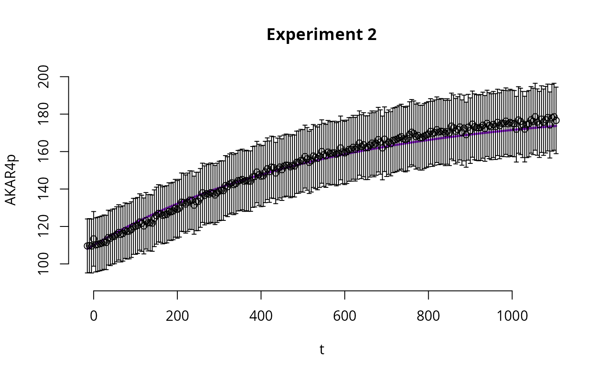
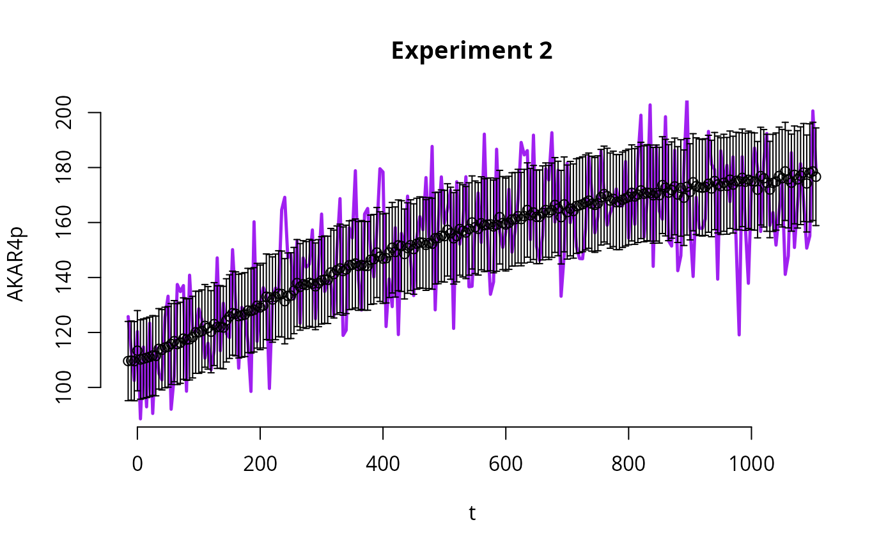

Simulate the AKAR4 deterministic model
simAKAR4.RmdThis article provides code to simulate the AKAR4 deterministic model (one time, no sampling). Specifically, given a vector of initial conditions and a default parameter, we simulate the time evolution of the concentrations of compounds in the system.
In this article, we are simulating the AKAR4 model with default parameters which are not expected to fit the data. For information on how to calibrate the AKAR4 deterministic model, i.e., to find parameter that fit the data, see the article on UQ of deterministic AKAR4.
Load the Model
This model is included with the package. To load your own model, see the user model article.
# Load the files with information on AKAR4 model and corresponding experimental data
modelFiles <- uqsa_example("AKAR4",full.names=TRUE)
# Save the information from the files into the R variable 'SBtab'
SBtab <- SBtabVFGEN::sbtab_from_tsv(modelFiles)
#> [tsv] file[1] «/Library/Frameworks/R.framework/Versions/4.3-arm64/Resources/library/uqsa/extdata/AKAR4/AKAR4_100nM.tsv» belongs to Document «AKAR4»
#> I'll take this as the Model Name.The AKAR4 deterministic model is an ODE model that describes the evolution in time of the concentrations of compounds in the system. The following R command will print the names of the compounds in the system and the corresponding default initial conditions.
# Names of compounds
SBtab$Compound[["!Name"]]
#> [1] "AKAR4" "AKAR4_C" "AKAR4p" "C"
# Default initial conditions
SBtab$Compound[["!InitialValue"]]
#> [1] 0.2 0.0 0.0 0.0The ODE system that will be used to run simulations from the AKAR4 model is derived from the reactions in the AKAR4 model:
# Reactions in the AKAR4 system
SBtab$Reaction
#> !Name !KineticLaw
#> reaction_1 reaction_1 kf_C_AKAR4*C*AKAR4 - kb_C_AKAR4*AKAR4_C
#> reaction_2 reaction_2 kcat_AKARp*AKAR4_C
#> !ReactionFormula !IsReversible
#> reaction_1 C + AKAR4 <=> AKAR4_C 1
#> reaction_2 AKAR4_C <=> AKAR4p + C 0The ODE system is automatically generated by running the following R commands.
# Function 'checkModel' returns the model name and compiles the files that will be used to run the ODE solver
modelName <- checkModel("AKAR4",uqsa_example("AKAR4",pat="_gvf[.]c$"))
#> building a shared library from c source, and using GSL odeiv2 as backend (pkg-config is used here).
#> cc -shared -fPIC `pkg-config --cflags gsl` -o './AKAR4.so' '/Library/Frameworks/R.framework/Versions/4.3-arm64/Resources/library/uqsa/extdata/AKAR4/AKAR4_gvf.c' `pkg-config --libs gsl`
# This will print the file that will be used to run the ODE simulations
comment(modelName)
#> [1] "./AKAR4.so"
# This will load all model related functions in R. For example, it load the function AKAP79_default(), which returns the model's default parameters
source(uqsa_example("AKAR4",pat='^AKAR4[.]R$'))
#> Loading required package: deSolve
print(AKAR4_default())
#> kf_C_AKAR4 kb_C_AKAR4 kcat_AKARp
#> 0.018 0.106 10.200Load Experiments (data)
The following R commands show how to load experimental data saved in
the R variable SBtab. This also includes instructions for
the simulator.
# Save experimental data into the R variable 'experiments'
experiments <- sbtab.data(SBtab)
# 'experiments' is a list of length n (= number of experiments)
# For example, this will show the initial state in experiment 1
print(experiments[[1]]$initialState)
#> AKAR4 AKAR4_C AKAR4p C
#> 0.2 0.0 0.0 0.4Simulate
Here we show how to simulate the AKAR4 ODE model using the same conditions that were used in each of the experiments. In AKAR4, the 3 experiments differ only in the initial conditions. In larger models, different experiments may also have different inputs, and this will be also taken into account when running the R commands below.
Function simulator.c will output a function (variable
sim in the code below) that will allow us to simulate the
AKAR4 ODE model (specified through the input argument
modelName) given the experimental conditions saved in
experiments.
# This will make a function `sim`, which will always simulate the scenarios described in the `experiments` list, but for user supplied parameters
sim <- simulator.c(experiments,modelName)
# If function `simulator.c` is called with the argument `noise=TRUE`, measurement errors are simulated and added to the trajectory
sim_with_noise <- simulator.c(experiments,modelName, noise = TRUE)The variable sim just created is a function that
requires a parameter p as input argument. The output of
function sim is the simulation of the ODE model given the
parameter p.
# This function returns the default parameter (which is not expected to fit the experimental data)
p <- AKAR4_default()
# Simulate the model and save the simulations in variable 'y'
y <- sim(p)
# Simulate the model with simulated measurement noise
y_with_noise <- sim_with_noise(p)In the AKAR4 example we have a list of 3 experiments, thus function
sim simulates the system 3 times, each time considering the
specific initial condition of the corresponding experiment. The output
of function sim (here saved in the variable y)
is a list of 3 elements, corresponding to the 3 experimental conditions.
Each element of the list is in turn a list with the following elements:
* state (simulated trajectory of the ODE system) *
func (the corresponding output of the system given the
computed state) * cpuSeconds (simulation
runtime)
Plot
Here we plot the results of the simulations.
E <- 2 # which experiment to plot
# experimental data for experiment E
out <- experiments[[E]]$outputValues$AKAR4pOUT
# measurement error for experiment E
err <- experiments[[E]]$errorValues$AKAR4pOUT
# measurements time points
tm <- experiments[[E]]$outputTime
# Plot simulations
par(bty='n',xaxp=c(80,200,4))
plot(tm, # time points
y[[E]]$func[1,,1], # simulated trajectory
type='l',
ylim=c(90,200), ylab="AKAR4p",
xlab="t",
main=sprintf("Experiment %i",E),
lwd=2.5,
col="purple"
)
# Plot experimental data with error bars
points(tm,out)
arrows(x0=tm,x1=tm,y0=out,y1=out+err,angle=90,length=0.025)
arrows(x0=tm,x1=tm,y0=out,y1=out-err,angle=90,length=0.025)
We now run the same code to plot the simulations with nois
y_with_noise.
E <- 2 # which experiment to plot
# experimental data for experiment E
out <- experiments[[E]]$outputValues$AKAR4pOUT
# measurement error for experiment E
err <- experiments[[E]]$errorValues$AKAR4pOUT
# measurements time points
tm <- experiments[[E]]$outputTime
# Plot simulations
par(bty='n',xaxp=c(80,200,4))
plot(tm, # time points
y_with_noise[[E]]$func[1,,1], # simulated trajectory
type='l',
ylim=c(90,200), ylab="AKAR4p",
xlab="t",
main=sprintf("Experiment %i",E),
lwd=2.5,
col="purple"
)
# Plot experimental data with error bars
points(tm,out)
arrows(x0=tm,x1=tm,y0=out,y1=out+err,angle=90,length=0.025)
arrows(x0=tm,x1=tm,y0=out,y1=out-err,angle=90,length=0.025)
Plots with gg-Plot
The following code plots simulations and data using an alternative
function, from the package ggplot2.
require(ggplot2)
#> Loading required package: ggplot2
D<-data.frame(time=experiments[[E]]$outputTime,
AKAR4p=experiments[[E]]$outputValues$AKAR4pOUT,
AKAR4pERR=experiments[[E]]$errorValues$AKAR4pOUT,
sim=y[[E]]$func[1,,1])
ggplot(D) +
geom_linerange(mapping=aes(x=time,y=AKAR4p,ymin=AKAR4p-AKAR4pERR,ymax=AKAR4p+AKAR4pERR),na.rm=TRUE) +
geom_point(mapping=aes(x=time,y=AKAR4p),na.rm=TRUE) +
geom_line(mapping=aes(x=time,y=sim),color="purple",lwd=1.2)
Plots for the simulations with noise y_with_noise.
require(ggplot2)
D<-data.frame(time=experiments[[E]]$outputTime,
AKAR4p=experiments[[E]]$outputValues$AKAR4pOUT,
AKAR4pERR=experiments[[E]]$errorValues$AKAR4pOUT,
sim=y_with_noise[[E]]$func[1,,1])
ggplot(D) +
geom_linerange(mapping=aes(x=time,y=AKAR4p,ymin=AKAR4p-AKAR4pERR,ymax=AKAR4p+AKAR4pERR),na.rm=TRUE) +
geom_point(mapping=aes(x=time,y=AKAR4p),na.rm=TRUE) +
geom_line(mapping=aes(x=time,y=sim),color="purple",lwd=1.2)